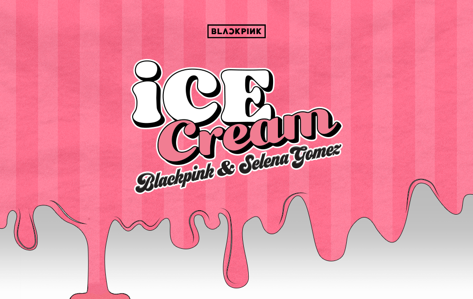

<
- 최신곡
- 앨범 히스토리
- 콘서트 영상
BLACK PINK Single Release

‘Ice Cream'은 블랙핑크와 팝스타 셀레나 고메즈가 콜라보한, 무더운 여름과 잘 어울리는 경쾌하고 청량한 사운드가 돋보이는 댄스-팝 곡이다. 겉으로는 차가워 보이지만 알고보면 달콤하다는 의미를 아이스크림에 비유한 톡톡 튀는 가사가 눈에 띈다. 블랙핑크의 메인 프로듀서 TEDDY와 세계적인 프로듀서 군단 Tommy Brown, Mr. Franks, 24가 협업한 ‘Ice Cream'은, 셀레나 고메즈와 블랙핑크 각자의 색과 개성이 잘 어우러진 재미난 곡으로 글로벌 음악 팬들의 기대를 모으고 있다.
Produced by: Tommy Brown, Mr. Franks, TEDDY, 24
Written By: Bekuh BOOM, Victoria Monet, TEDDY, Tommy Brown, Steven Franks, 24, Selena Gomez, Ariana Grande
발매사 YG PLUS
기획사 YG Entertainment